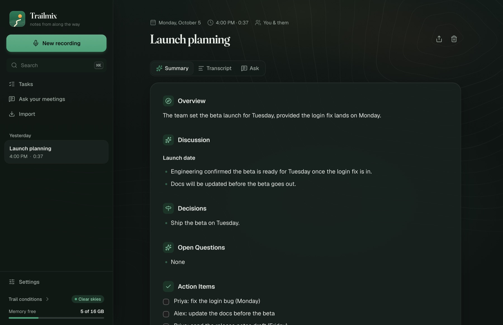

Have the meeting. Trailmix hands you the notes: what was decided, who's doing what, and everything that was said, searchable. It works with any call, on a Mac, a Windows PC or Linux, and your meetings never leave your computer unless you choose.
Download Trailmix
One Trailmix, the same notes and the same privacy on every computer. Each version keeps itself up to date.
Windows 10 or 11, 64-bit
Ubuntu 22.04, Debian 12, Fedora 40 or newer
Every version, with release notes: all releases on GitHub.
Two minutes, plus a one-time download of the speech models.
Double-click the Trailmix download (Trailmix-macos-arm64.dmg, or -x86_64 on an Intel Mac) in your Downloads, then drag the Trailmix icon onto the Applications folder next to it.
Open Trailmix from Applications. macOS says it “can't verify” Trailmix and offers only Done or Move to Trash: click Done. Then:
Why: Trailmix isn't signed with a paid Apple developer certificate yet, so macOS asks you to confirm once. Updates install from inside the app without this step.
A short checklist in the app: a sound check that makes sure both sides of your calls are heard (it tells you exactly which macOS prompts to allow), the speech models (about 1.7 GB, once), and a summary model, which it can install for you with one click, or you can use an API key for Claude, OpenAI or Gemini. Then start a call and press Record, in the window or from the menu bar.
Double-click the Trailmix download (Trailmix-windows-x64.exe, or -arm64 on a Snapdragon PC). It installs just for you, with no administrator password.
Windows may stop the installer the first time because it doesn't recognize it yet. Click More info, then Run anyway.
Why: the Windows version isn't signed with a paid code-signing certificate yet. Updates install from inside the app without this step.
A short checklist in the app: the speech models (once), and a summary model or an API key for Claude, OpenAI or Gemini. Trailmix lives in the system tray by the clock. Start a call and press Record there, in the window, or with Ctrl+Alt+Shift+R. It can remind you when a Zoom or Teams call starts.
For the AppImage: right-click it → Properties → Allow executing as a program, or run chmod +x Trailmix-linux-*.AppImage, then open it. Or install the .deb (Ubuntu, Debian) or .rpm (Fedora, openSUSE) with your package manager.
If the AppImage won't open, install FUSE 2: sudo apt install libfuse2t64 on Ubuntu 24.04, or libfuse2 on other distros.
Trailmix shows an icon in the system tray. KDE, Cinnamon and most desktops show it straight away; on GNOME, turn on the AppIndicator extension (Ubuntu has it on already).
The AppImage updates itself from inside the app. The .deb and .rpm say when there's a new version, with a link to it.
A short checklist in the app: the speech models (once), and a summary model or an API key for Claude, OpenAI or Gemini. Then start a call and press Record.
You have the meeting. Trailmix hands you the notes.
Press record and talk. When you hang up, the notes are there: what was decided, who's doing what by when, and what's still open.
Zoom, Google Meet, Teams, Slack, FaceTime or a phone call on your computer. No bot joins, nothing to install for anyone else, nobody notices.
Everything happens on your own computer. Nothing is uploaded unless you choose a cloud AI to write the notes.
Search every meeting, or just ask: "what did we decide about pricing?" The answer links back to the moment it was said.
Every promise made in every meeting lands on one list, ready to tick off, or to send to Traverse as a task.
Your job, a committee, personal: meetings sort themselves into the right place, and you switch with one click.
Old meetings from Granola, transcripts from Zoom, Teams or Otter, or any audio or video file. They become notes like the rest.
When it isn't sure of a name or a word, it asks with one tap, and spells it right from then on.
Want the details: models, formats, how the audio is captured? The specs are on GitHub.
A Mac on macOS 14.2 or later (Apple silicon, or an Intel Mac, where transcribing is slower), a Windows 10 or 11 PC (Intel, AMD or Snapdragon), or a Linux desktop from 2022 or later (Ubuntu 22.04, Debian 12, Fedora 40 or newer, with PipeWire or PulseAudio; the AppImage also needs libfuse2). 16 GB of memory is best for local summaries; with 8 GB, use a cloud AI for summaries or a small local model.
Not by default: recording, transcription and summaries all run on your computer. If you add an API key for a cloud AI, only the transcript goes to that provider, to write the notes.
Trailmix checks for new versions and offers to install them from its window or its menu. On a Mac, macOS asks for the microphone and system audio permissions again after an update, until Trailmix is signed by Apple. On Linux the AppImage updates itself; the .deb and .rpm point you to the new version.
They do everything the Mac version does except a few extras that are still coming, and they've had less real-world use, so expect the odd rough edge, and tell us about it from Settings → Feedback.
Trailmix has two siblings, made the same way: free, open source, and your data stays on your computer.
What's next, and who's on it. Your own workspace for planning work: tasks, projects, a morning briefing, and an inbox where AI turns threads and meetings into tasks you approve. Trailmix sends it your action items.
Visit Traverse →Who you know, and how well. The people you know, how well you know them and what you know about them, kept in one place on your computer.
Visit The Lodge →